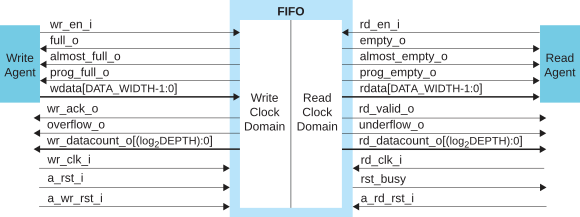

FIFO Core User Guide
The FIFO core is a customizable first-in first-out memory queue that uses block RAM in the FPGA for storage. The core has parameters you use to create a custom instance. For example, you can set the FIFO depth, the data bus width, whether the read and write domains are synchronous or asynchronous, etc.
Use the IP Manager to select IP, customize it, and generate files. The FIFO core has an interactive wizard to help you set parameters. The wizard also has options to create a testbench and/or example design targeting an Efinix® development board.
This help gives you an overview of the FIFO core and how to configure it with the IP Manager. For detailed information, refer to FIFO User Guide in the Support Center.
Features
- Depths up to 131,072 words
- Data widths from 1 to 512 bits
- Symmetric or non-symmetric aspect ratios (read-to-write port ratios ranging from 1:16 to 16:1)
- Synchronous or asynchronous clock domains supports standard or First–Word–Fall–Through (FWFT)
- Programmable full and empty status flags, set by user–defined parameters
- Almost full and almost empty flags indicate one word left
- Configurable handshake signals
- Asynchronous clock domain FWFT read mode
- FIFO datacount to indicate how many words available in FIFO
- Option to exclude optional flags
- Option to exclude overflow and underflow protection
- Includes example designs targeting the Trion® T20 BGA256 Development Board
- Verilog RTL and simulation testbench
Functional Description
The FIFO core is a first-in first-out memory queue for any application requiring an ordered storage buffer and retrieval. The core provides an optimized solution using the block RAM in Trion®, Titanium, and Topaz FPGAs. The core supports synchronous (read and write use the same clock) and asynchronous (read and write use different clocks) clocking.

IP Manager
The Efinity® IP Manager is an interactive wizard that helps you customize and generate Efinix® IP cores. The IP Manager performs validation checks on the parameters you set to ensure that your selections are valid. When you generate the IP core, you can optionally generate an example design targeting an Efinix development board and/or a testbench. This wizard is helpful in situations in which you use several IP cores, multiple instances of an IP core with different parameters, or the same IP core for different projects.
The IP Manager is included with the Efinity software v2020.2 and higher.
- IP Catalog—Provides a catalog of IP cores you can select. Open the IP Catalog using the toolbar button or using .
- IP Configuration—Wizard to customize IP core parameters, select IP core deliverables, review the IP core settings, and generate the custom variation.
- IP Editor—Helps you manage IP, add IP, and import IP into your project.
Generating the FIFO Core with the IP Manager
- Open the IP Catalog.
- Choose core and click Next. The IP Configuration wizard opens.
- Enter the module name in the Module Name box.Note: You cannot generate the core without a module name.
- Customize the IP core using the options shown in the wizard. For detailed information on the options, refer to the Customizing the FIFO section.
- (Optional) In the Deliverables tab, specify whether to generate an IP core example design targeting an Efinix® development board and/or testbench. These options are turned on by default.
- (Optional) In the Summary tab, review your selections.
- Click Generate to generate the IP core and other selected deliverables.
- In the Review configuration generation dialog box,
click Generate. The Console in the
Summary tab shows the generation status.Note: You can disable the Review configuration generation dialog box by turning off the Show Confirmation Box option in the wizard.
- When generation finishes, the wizard displays the Generation Success dialog box. Click OK to close the wizard.
The wizard adds the IP to your project and displays it under IP in the Project pane.
Generated Files
- <module name>_define.vh—Contains the customized parameters.
- <module name>_tmpl.v—Verilog HDL instantiation template.
- <module name>_tmpl.vhd—VHDL instantiation template.
- <module name>.v—IP source code.
- settings.json—Configuration file.
- <kit name>_devkit—Has generated RTL, example design, and Efinity® project targeting a specific development board.
- Testbench—Contains generated RTL and testbench files.
Instantiating the IP
- <module name>.v_tmpl.sv is the Verilog HDL module.
- <module name>.v_tmpl.vhd is the VHDL component declaration and instantiation template.

Customizing the FIFO
The core has parameters so you can customize its function. You set the parameters in the General tab of the core's IP Configuration window.
| Parameter | Options | Description |
|---|---|---|
| Clock Mode | Asynchronous, Synchronous | Defines whether the FIFO read and write domain is synchronous or
asynchronous. Default: Asynchronous |
| FIFO Depth | 16 – 131072 | Defines the FIFO depth, which determines the maximum number of
words the FIFO can store before it is full. The depth is multiples
of 2 from 16 – 217. Default: 512 |
| Data Bus Width | 1 – 512 | Defines the FIFO's read and write data bus widths. Default:
16 |
| FIFO Mode | STANDARD, FWFT | Defines the FIFO's read mode as standard or FWFT. Default:
STANDARD |
| Output Register | Enable, Disable | Adds one pipeline stage to rdata and rd_valid_o to improve timing
delay out from efx_ram. Default: 0 (Disable) |
| Programmable Full Assert Value | 4 - (FIFO Depth - 2) | Threshold value when prog_full_o is enabled. When Enable
Programmable Full Option is: STATIC_SINGLE: Single threshold
value for assertion and deassertion of
prog_full_o. STATIC_DUAL: Upper threshold value for
assertion of prog_full_o. Default: 128 |
| Enable Programmable Full Option | NONE, STATIC_SINGLE, STATIC_DUAL | Controls the prog_full_o signal: NONE:
Disabled. STATIC_SINGLE: Enabled, asserts and
deasserts at a single threshold value.
(default) STATIC_DUAL: Enabled, asserts or deasserts
at different threshold values. |
| Programmable Full Negate Value | 3 - (FIFO Depth - 3) | Use when PROGRAMMABLE_FULL is set to STATIC_DUAL. Sets the lower
threshold value for prog_full_o during deassertion. Default:
127 |
| Programmable Empty Assert Value | 0 - (FIFO Read Depth - 1) | Threshold value when prog_empty_o is enabled. When Enable
Programmable Empty Option is: STATIC_SINGLE: Single threshold
value for assertion and deassertion of
prog_empty_o. STATIC_DUAL: Lower threshold value for
assertion of prog_empty_o. Default: 0 |
| Programmable Empty Negate Value | 0 - (FIFO Read Depth - 1) | Use when PROGRAMMABLE_EMPTY is set to STATIC_DUAL. Sets the upper
threshold value for prog_empty_o during deassertion. Default:
0 |
| Enable Programmable Empty Option | NONE, STATIC_SINGLE, STATIC_DUAL | Controls the prog_empty_o signal: NONE: Disabled
(default). STATIC_SINGLE: Enabled, asserts and
deasserts at a single threshold value. STATIC_DUAL:
Enabled, asserts or deasserts at different threshold
values. |
| Optional Signals | Enable, Disable | Enables the optional signals: overflow_o, underflow_o,wr_ack_o,
almost_full_o, , rd_valid_o, and almost_empty_o. You can enable this
feature with some trade-offs in timing performance. However, this
feature must be enabled when generating the Example Designs or
Testbench. Default: Disable |
| Pipeline Register | Enable, Disable | Applicable to asynchronous FIFO mode only. Adds one latency of
the opposing clock domain to all applicable output signals when
wr_en_i or rd_en_i signal is asserted. Enable this feature to
improve the macro timing. Efinix recommends that
you enable this parameter in asynchronous FIFO mode. Default:
Enable |
| Synchronization Stages | 2 – 8 | Configures the number of synchronization stages for the cross
clock domain signals in asynchronous mode. This increases the
latency of opposing clock domain status flag signals. Default:
2 |
| Asymmetric Width Ratio | 16:1, 8:1, 4:1, 2:1, 1:1, 1:2, 1:4, 1:8, 1:16 | Selects asymmetrical width ratios. 1:1 is symmetric width
ratio. Default: 1:2 |
| Reset Synchronizer | Enable, Disable | Disable if you do not want the reset signal to be synchronized to
the respective clock domain during asynchronous mode. Ensure that
the supplied reset signal is synchronized to the respective FIFO
clock domain in design upper level order for the FIFO reset to
operate correctly. Default: Enable |
| Endianness | BIG_ENDIAN, LITTLE_ENDIAN | Select the order in which the bytes are stored and read out
first. Write width > Read width:
Read width > Write width:
Default: BIG_ENDIAN |
| Overflow Protection | Enable, Disable | The overflow protection disables the wr_en_i
port when the FIFO is full. If enabled, overflowing the FIFO is not
destructive to the contents of the FIFO. The
overflow_o port is exposed when this feature is
enabled. You can choose to disable this feature to achieve better
timing performance. Default: Enable |
| Underflow Protection | Enable, Disable | The underflow protection disables the rd_en_i
port when the FIFO is empty. If enabled, underflowing the FIFO is
not destructive to the contents of the FIFO. The
underflow_o port is exposed when this feature
is enabled. You can choose to disable this feature to achieve better
timing performance.Default: Enable |
| FIFO Implementation | Block RAM, LUT Register | Defines the FIFO RAM implementation as Block RAM or LUT Register.
This is only available for FIFO Depth = 16 Default: Block
RAM |